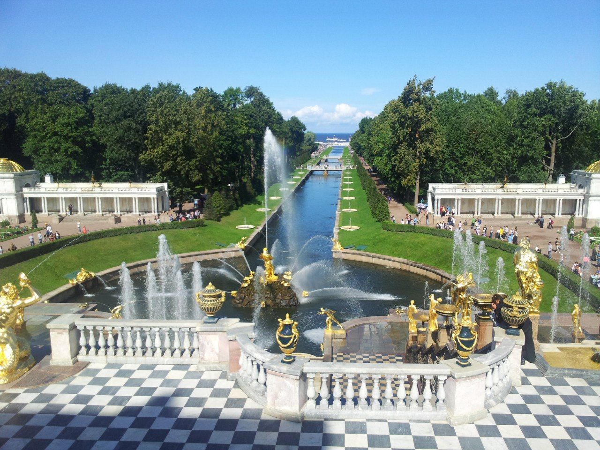

Sergey Sokolov

Minsk, Belarus
Skype: sergey.sokolov.v
Phone: +375 29 847 44 47
Email: sergey.sokolov.by@gmail.com
Professional experience
iTechArt
October 2018 - Present
Project: Patients treatment trial system
Stack: ASP.NET MVC 4, EntityFramework, MS SQL Server
Responsiblities:
- Implement software customizations and configurations per the approved requirements
- Complete tasks and documentation as assigned by the LTD / LPD
Brimit
July 2018 – September 2018
Project: Bank website
Stack: ASP.NET MVC 5, Sitecore, HTML5, JS/jQuery
Responsiblities:
- Gathering requirements;
- Back-end development using Sitecore;
- Development of module that handles locations of ATMs and back offices;
- Development of calculator for bonus points;
- Front-end development using HTML5 and CSS3.
Education
Belarusian State Technological University, Minsk, Belarus (2007 - 2012)
Bachelor of Science in Computer Science degree.